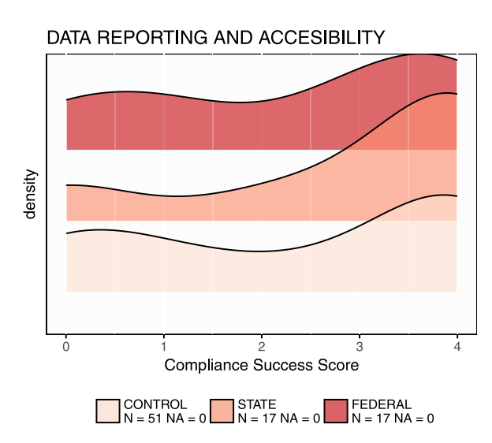
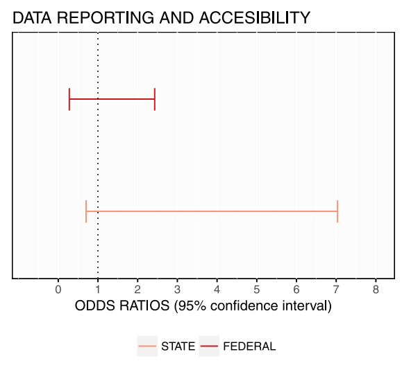
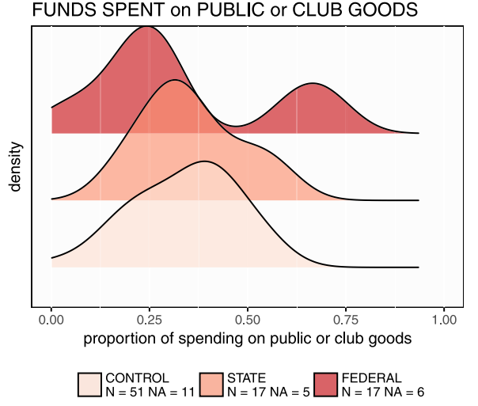
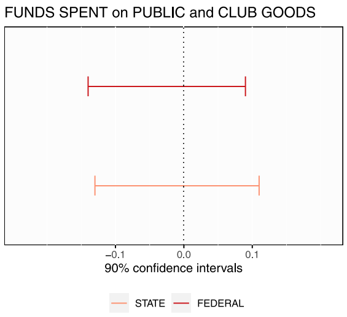

Un experimento de campo pre-registrado sobre cumplimiento municipal con el programa FISM
Journal of Development Economics, 2023Los gobiernos nacionales dependen de transferencias intergubernamentales para implementar programas sociales en municipios marginados
El incumplimiento es generalizado: mal gasto, opacidad, desvío de fondos — comprometiendo servicios básicos para los más pobres
Las auditorías son el remedio institucional propuesto. Pero hay poca evidencia causal de que funcionen.
Federal · ASF
n = 17
Mayor independencia · Reportes más severos
Estatal · EF
n = 17
Dependencia política local · Reportes menos severos
Control
n = 51
Sin intervención · Proporción 1:1:3
03 · DATOS Y MEDICIÓN
INEGI · Encuesta SCNM
Gasto municipal en infraestructura 2012–2014. Medida objetiva de compliance con FISM.
Reportes de auditoría ASF / EF
Informes del ejercicio 2010. Verifican entrega del tratamiento y documentan severidad de hallazgos.
Encuesta original a autoridades
Presidentes municipales y tesoreros. Mide conocimiento de la auditoría, presión percibida y respuesta conductual.


Las distribuciones del Compliance Success Score se superponen completamente entre grupos. Los odds ratios cruzan 1 en ambos brazos — sin efecto significativo sobre el reporte de cumplimiento.


La proporción del gasto en bienes públicos vs. club tampoco difiere entre grupos. Los IC al 90% cruzan cero — resultado nulo consistente en todas las dimensiones de cumplimiento.
[CONTENIDO SLIDE 6 — Explicación breve]
[CONTENIDO SLIDE 6 — Explicación breve]
[CONTENIDO SLIDE 6 — Explicación breve]
[CONTENIDO SLIDE 6 — Explicación breve]
[CONTENIDO SLIDE 7 — Amenazas a la validez interna: atrición, contaminación, etc.]
[CONTENIDO SLIDE 7 — Generalización de los resultados a otros contextos]
[CONTENIDO SLIDE 8 — Síntesis general del argumento del paper]
[CONTENIDO SLIDE 8 — Implicación de política 1]
[CONTENIDO SLIDE 8 — Implicación de política 2]
[CONTENIDO SLIDE 8 — Agenda de investigación futura]